BOTOX ROSAOUTUBRO 2026
Seu cuidado.
Nossa causa.
Outubro rosa.
Outubro é o mês do botox rosa na FB Harmonização & Odontologia.
Ao fazer seu botox ou um procedimento de harmonização facial, você ganha a camiseta oficial do IMAMA 2026 e aproveita condições especiais durante todo o mês de outubro.
Seu autocuidado ganha um símbolo de apoio:
a camiseta oficial do IMAMA 2026.
01 / A ORIGEM DO BOTOX ROSA
UM PROPÓSITO QUE VAI ALÉM DO ESPELHOO presente é seu.
A causa é de todos.
O Botox Rosa nasceu em Porto Alegre para unir o autocuidado a um gesto de solidariedade.
Uma forma de apoiar simbolicamente o trabalho tão lindo e inspirador do Instituto IMAMA e dar mais visibilidade à importância do cuidado com a saúde da mulher.
No Outubro Rosa, reunimos beleza, solidariedade e conscientização para que cada encontro na clínica leve essa mensagem adiante. Um convite para cuidar de você e abraçar uma causa que acolhe tantas mulheres.
Quero vestir essa causa
A inspiração
por trás da causa.
02 / IMAMA: ACOLHIMENTO E APOIO
O AMOR PELA VIDA NOS APROXIMAJuntas, a vida
ganha mais força.
Nenhuma mulher deveria atravessar essa jornada sozinha.
O Instituto da Mama do Rio Grande do Sul transforma apoio em presença: acolhimento psicológico, orientação nutricional e jurídica e iniciativas que fazem diferença na vida de pacientes.
- Escuta e
acolhimento - Informação e
conscientização - Uma rede
de apoio
É essa rede de cuidado que inspira o Botox Rosa.
Por elas. Por nós. Pela vida.
GNC Cinemas · Shopping Praia de Belas
03 / HISTÓRIAS QUE VESTEM A CAUSA
Uma camiseta.
Tantas conexões.
Tem o convite, o abraço, o sorriso.
E a certeza de que cuidar de si também pode aproximar a gente.
 25+ANOS DE
25+ANOS DEEXPERIÊNCIA
04 / O CUIDADO POR TRÁS DA CAMPANHA
Dra. Fernanda
Beltrão.
Botox e harmonização facial no Menino Deus
CRO-RS: 12341 · HARMONIZAÇÃO FACIAL & IMPLANTODONTIA
A FB Harmonização & Odontologia atende no bairro Menino Deus, em Porto Alegre, com a Dra. Fernanda Beltrão. São mais de 25 anos de experiência e um olhar atento para a individualidade de cada paciente, respeitando seus desejos, sua história e sua beleza natural.
Com o Botox Rosa 2026, o cuidado com a autoestima também convida à solidariedade e à conscientização sobre a saúde das mamas. A indicação de botox ou de um procedimento de harmonização facial depende de avaliação individual.
Rua José de Alencar, 386 · Sala 707Menino Deus, Porto Alegre/RS · CEP 90880-480 Telefone: (51) 98639-0931
consciência e solidariedade.
05 / VAMOS CONVERSAR?
Um pouco mais
sobre a campanha.
Cuidado também é ter espaço
para tirar suas dúvidas.
O que é a campanha Botox Rosa?
O Botox Rosa é a campanha de outubro de 2026 da FB Harmonização & Odontologia, com a Dra. Fernanda Beltrão, no Menino Deus, em Porto Alegre. A iniciativa une autocuidado, botox e harmonização facial a um gesto simbólico de apoio à causa do IMAMA.
Como participo do Botox Rosa?
Agende uma avaliação pelo WhatsApp da clínica. Durante todo o mês de outubro de 2026, pacientes que realizarem botox ou um procedimento de harmonização facial na campanha ganham a camiseta oficial do IMAMA 2026 e aproveitam condições especiais. Nossa equipe informa os procedimentos, as condições e os tamanhos disponíveis.
Como minha participação apoia a causa?
A camiseta é um símbolo de apoio ao IMAMA. Ao vesti-la e compartilhar a campanha, você ajuda a divulgar a causa e a importância do cuidado com as mamas. Nossa equipe pode explicar as formas de apoio da clínica nesta edição; também é possível contribuir diretamente com o instituto.
Também posso apoiar diretamente o IMAMAPreciso de avaliação antes do procedimento?
Sim. A indicação depende de avaliação individual, do seu histórico de saúde e dos seus objetivos. Informe à profissional seus tratamentos, condições de saúde e medicamentos em uso.
Onde fazer botox em Porto Alegre?
A FB Harmonização & Odontologia oferece atendimento em botox e harmonização facial no Menino Deus, com a Dra. Fernanda Beltrão. A clínica fica na Rua José de Alencar, 386, sala 707 — Menino Deus, Porto Alegre/RS. Fale com nossa equipe no WhatsApp (51) 98639-0931 para agendar uma avaliação e combinar seu horário.
Ver no mapa